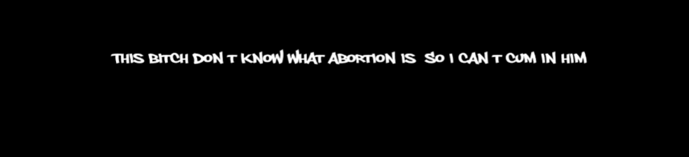

A hip-hop coding project
The goal
We wanted to addres the problem of how women are being patronized by many male rappers, and that words as whore and bitch are way too common in hip-hop lyrics. This problem then continues, as young people listen to this music. We weren't interested in the solution of just boycutting this music, as we all like the genre ourself. We took a different approach.
The final project
What we made was a program written in p5.js - a JavaScript library. The program loops through song lyrics (stored in a JSON-file) and identifies female pronouns and exchange them with male ones. The new edited lyric then gets displayed on the screen and automatically refreshes and does it with a new lyric. You can see an example of this exchange in the picture above.
What did we learn from this?
Besides the obvious parts as practicing coding, especially using a JSON-file was new to us, and becoming more
experienced with JavaScript, I really enjoyed how we were able too express critique through coding. I really
think this program speaks for itself, and that it is not necessary to explain why it is critical and how for
visitors to know.
Making this program in a studygroup, we shared responsibilities and made the program faster and better than
any of us could have done by themselves.
Overall I gained more experienced with:
- Programming - p5.js, JavaScript, JSON
- Critical design thinking
- Critical making